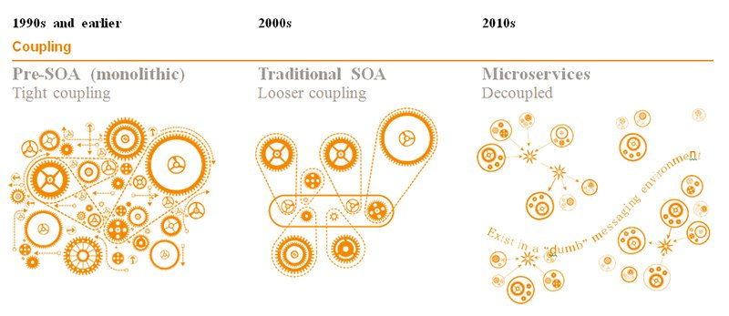
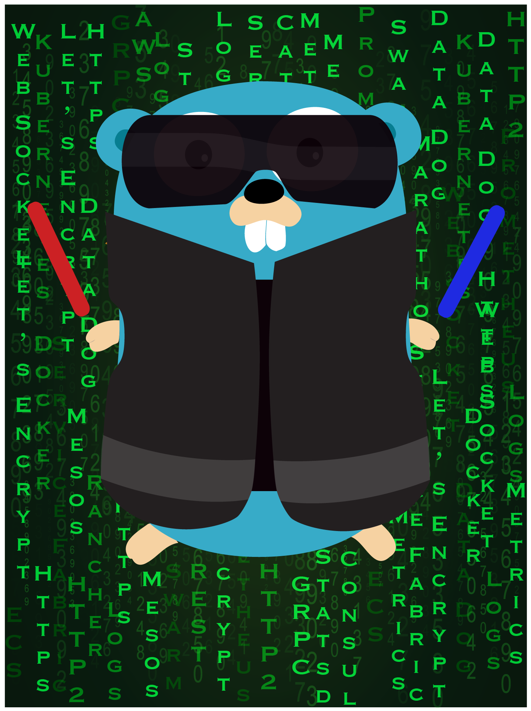
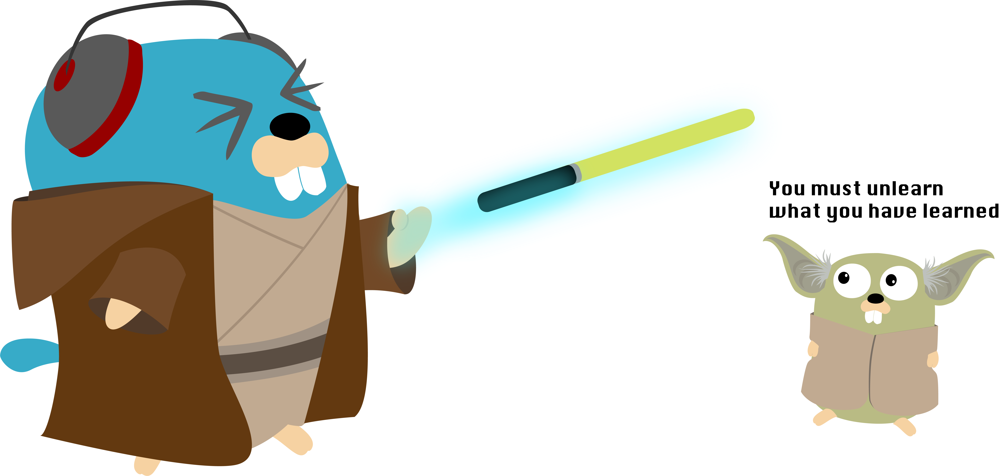

./traefik bugTræfik
As an Ingress Controller for Kubernetes
Presentation available at https://geraldcroes.github.io/devconf-us-2018-boston
Whoami
Senior Developer @ Containous
Former Chief Enterprise Architect for an Insurance Company
Passionate about Taekwondo …
… since people were making fun of my former love for PHP
Containous
We Believe in Open Source
We Deliver Træfik
Commercial Support for Træfik
12 people, 90% technical experts
We Are Hiring!
The Project
The Cloud Native Edge Router
The Project
MIT License
16,800+ ⭐
160M+ ⬇️
1800+ LGTM
300+ üë∑
I’ve Found a Bug!
Autofills the issue template (environment, configuration files, …)
Why Træfik?
Why, Mr Anderson?
Evolution of Software Design

The Premise of Microservices …
… And What Happens
Nice, but Unconfortable

Where Is the service?
Tools of the Trade


What If I Told You?

That You Don’t Have to Write This Configuration File…?
Here Comes Træfik!
Træfik with Kubernetes
Kubernetes, a Quick Recap
Cluster
Nodes
Pods
Services
Ingress

Ingress Controller
Træfik Set Up
We have Helm support - https://helm.sh/

# Kubernetes Ready
kubectl get all
...
# Install Traefik into your Kubernetes cluster
helm install stable/traefik
# Start your service in Kubernetes
kubectl apply -f ./myservice.ymlTr√¶fik’s Web Dashboard: Frontends
helm install stable/traefik
--set dashboard.enabled=true,dashboard.domain=dashboard.localhostTræfik Core Concepts

Remember the Diagram?
Let’s Simplify
Providers
Entrypoints
Backends
Frontends

At a Glance
In Practice
End of Core Concepts
Time to Deploy Some Stuff!
This Is the Story of a Pod …
… Who Defined Itself as a YAML …
apiVersion: extensions/v1beta1
kind: Ingress
metadata:
name: whoami-ingress
annotations:
kubernetes.io/ingress.class: traefik
spec:
rules:
- host: whoami.localhost
http:
paths:
- path: /
backend:
serviceName: whoami-service
servicePort: http
---
apiVersion: v1
kind: Service
metadata:
name: whoami-service
spec:
ports:
- name: http
targetPort: 80
port: 80
selector:
app: whoamikubectl apply -f whoami-service.yml… That Meets an Ingress …
… That Also Defined Itself a YAML …
apiVersion: extensions/v1beta1
kind: Deployment
metadata:
name: whoami-deployment
spec:
replicas: 1
selector:
matchLabels:
app: whoami
template:
metadata:
labels:
app: whoami
spec:
containers:
- name: whoami-container
image: containous/whoamikubectl apply -f whoami-service.yml… And in the End They Have a Route Together …
… And It Lived Connected to the World Ever After …
Such a Cute Example!
More Routes?
With Two Replicas
apiVersion: extensions/v1beta1
kind: Deployment
metadata:
name: whoareyou-deployment
spec:
replicas: 2
selector:
matchLabels:
app: whoareyou
template:
metadata:
labels:
app: whoareyou
spec:
containers:
- name: whoareyou-container
image: containous/whoami
---
apiVersion: v1
kind: Service
metadata:
name: whoareyou-service
spec:
ports:
- name: http
targetPort: 80
port: 80
selector:
app: whoareyou
---
apiVersion: extensions/v1beta1
kind: Ingress
metadata:
name: whoareyou-ingress
annotations:
kubernetes.io/ingress.class: traefik
spec:
rules:
- host: whoareyou.localhost
http:
paths:
- path: /
backend:
serviceName: whoareyou-service
servicePort: httpkubectl apply -f whoareyou.ymlAnd the New Routes
The Whole Picture
I Wish We Could Have Talked About …
Https with Let’s Encrypt
Dynamic Configurations with GRPC, DOCKER, SWARM, MESOS, CONSUL…
Reverse-Proxy features, as in RATE LIMITING, HEALTH CHECKS, CIRCUIT-BREAKERS, CLUSTER MODE …
Security features, as in SSL, DYNAMIC/WILDCARD TLS CERTIFICATE, KUBERNETES SECRETS, AUTH FORWARD…
HTTP features, as in CUSTOM HEADERS, CUSTOM ERROR PAGES, REDIRECTS, PROXY PROTOCOL, HSTS, WEBSOCKETS…
Tracing and Metrics, as with ZIPKIN, JAEGER, PROMETHEUS…